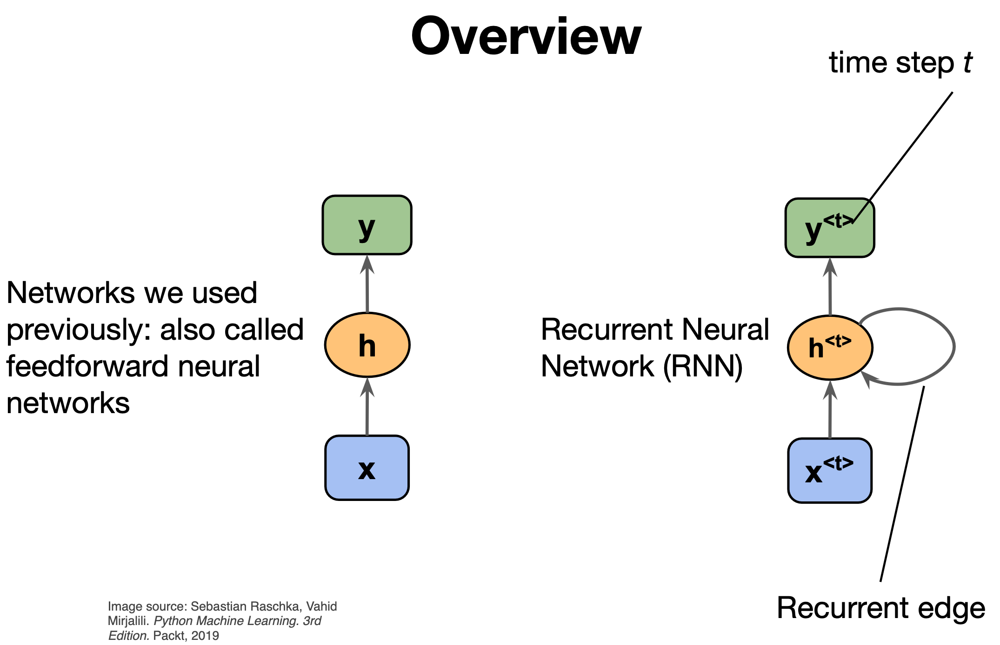
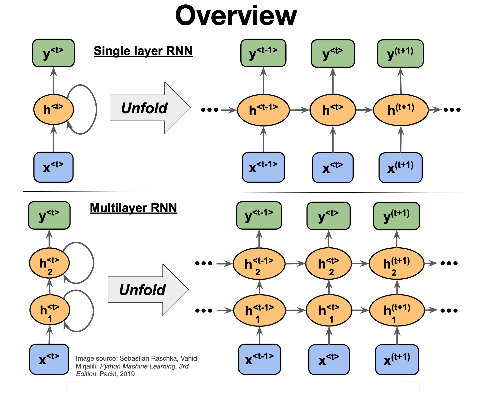
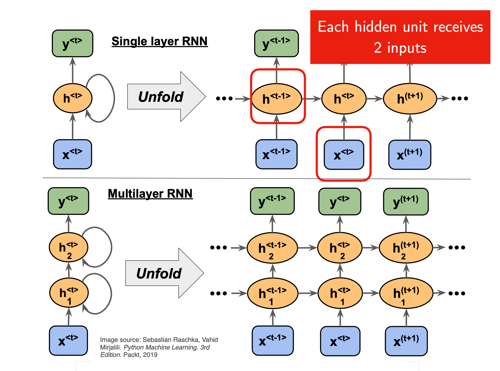
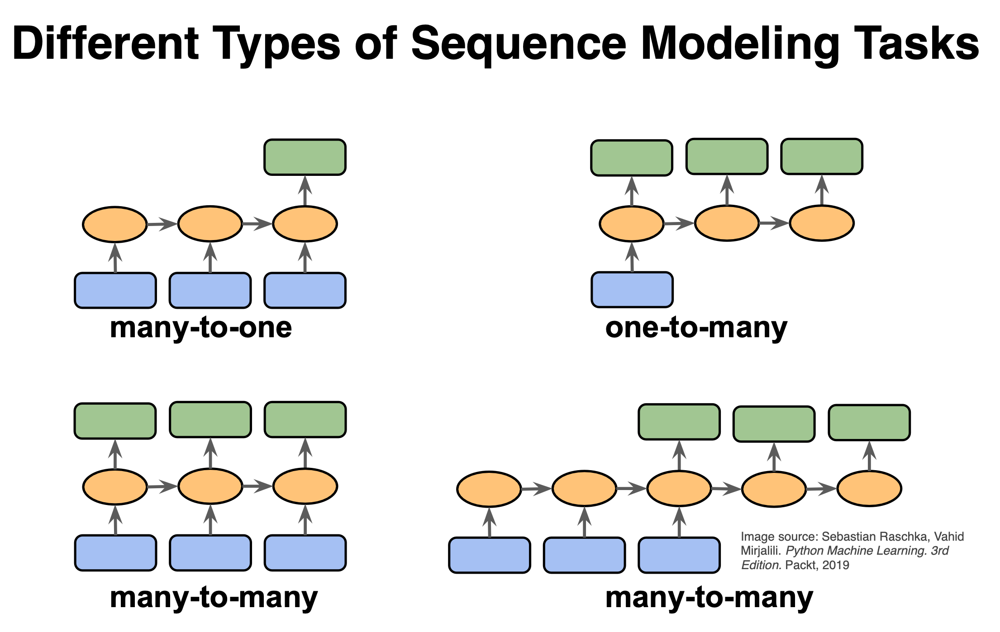
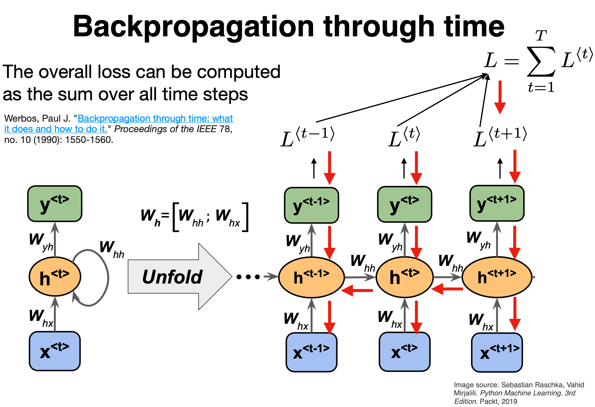
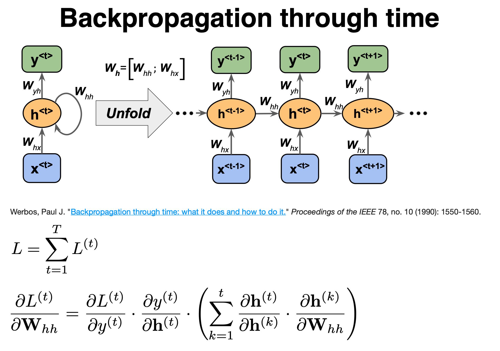

Week 10: Recurrent neural networks
March 6-17, 2023
Plans for weeks 10 and 11, March 6-17
- Wrapping up Convolutional Neural Networks
- Recurrent neural networks
- Video of lecture at with subtitles
Resources on Deeep learning
- For RNNs see Goodfellow et al chapter 10. See also chapter 11 and 12 on practicalities and applications
- Reading suggestions for implementation of RNNs: Aurelien Geron's chapter 14.
- Deep Learning Tutorial on AEs from Stanford University
- Building AEs in Keras
- Introduction to AEs in TensorFlow
- Grosse, University of Toronto, Lecture on AEs
- Bank et al on AEs
Building convolutional neural networks in Tensorflow and Keras
As discussed earlier, CNNs are neural networks built from the assumption that the inputs to the network are 2D images. This is important because the number of features or pixels in images grows very fast with the image size, and an enormous number of weights and biases are needed in order to build an accurate network.
As before, we still have our input, a hidden layer and an output. What's novel about convolutional networks are the convolutional and pooling layers stacked in pairs between the input and the hidden layer. In addition, the data is no longer represented as a 2D feature matrix, instead each input is a number of 2D matrices, typically 1 for each color dimension (Red, Green, Blue).
Setting it up
It means that to represent the entire dataset of images, we require a 4D matrix or tensor. This tensor has the dimensions:
$$ (n_{inputs},\, n_{pixels, width},\, n_{pixels, height},\, depth) . $$The MNIST dataset again
The MNIST dataset consists of grayscale images with a pixel size of \( 28\times 28 \), meaning we require \( 28 \times 28 = 724 \) weights to each neuron in the first hidden layer.
If we were to analyze images of size \( 128\times 128 \) we would require \( 128 \times 128 = 16384 \) weights to each neuron. Even worse if we were dealing with color images, as most images are, we have an image matrix of size \( 128\times 128 \) for each color dimension (Red, Green, Blue), meaning 3 times the number of weights \( = 49152 \) are required for every single neuron in the first hidden layer.
Strong correlations
Images typically have strong local correlations, meaning that a small part of the image varies little from its neighboring regions. If for example we have an image of a blue car, we can roughly assume that a small blue part of the image is surrounded by other blue regions.
Therefore, instead of connecting every single pixel to a neuron in the first hidden layer, as we have previously done with deep neural networks, we can instead connect each neuron to a small part of the image (in all 3 RGB depth dimensions). The size of each small area is fixed, and known as a receptive.
Layers of a CNN
The layers of a convolutional neural network arrange neurons in 3D: width, height and depth. The input image is typically a square matrix of depth 3.
A convolution is performed on the image which outputs a 3D volume of neurons. The weights to the input are arranged in a number of 2D matrices, known as filters.
Each filter slides along the input image, taking the dot product between each small part of the image and the filter, in all depth dimensions. This is then passed through a non-linear function, typically the Rectified Linear (ReLu) function, which serves as the activation of the neurons in the first convolutional layer. This is further passed through a pooling layer, which reduces the size of the convolutional layer, e.g. by taking the maximum or average across some small regions, and this serves as input to the next convolutional layer.
Systematic reduction
By systematically reducing the size of the input volume, through convolution and pooling, the network should create representations of small parts of the input, and then from them assemble representations of larger areas. The final pooling layer is flattened to serve as input to a hidden layer, such that each neuron in the final pooling layer is connected to every single neuron in the hidden layer. This then serves as input to the output layer, e.g. a softmax output for classification.
Prerequisites: Collect and pre-process data
# import necessary packages
import numpy as np
import matplotlib.pyplot as plt
from sklearn import datasets
# ensure the same random numbers appear every time
np.random.seed(0)
# display images in notebook
%matplotlib inline
plt.rcParams['figure.figsize'] = (12,12)
# download MNIST dataset
digits = datasets.load_digits()
# define inputs and labels
inputs = digits.images
labels = digits.target
# RGB images have a depth of 3
# our images are grayscale so they should have a depth of 1
inputs = inputs[:,:,:,np.newaxis]
print("inputs = (n_inputs, pixel_width, pixel_height, depth) = " + str(inputs.shape))
print("labels = (n_inputs) = " + str(labels.shape))
# choose some random images to display
n_inputs = len(inputs)
indices = np.arange(n_inputs)
random_indices = np.random.choice(indices, size=5)
for i, image in enumerate(digits.images[random_indices]):
plt.subplot(1, 5, i+1)
plt.axis('off')
plt.imshow(image, cmap=plt.cm.gray_r, interpolation='nearest')
plt.title("Label: %d" % digits.target[random_indices[i]])
plt.show()
Importing Keras and Tensorflow
from tensorflow.keras import datasets, layers, models
from tensorflow.keras.layers import Input
from tensorflow.keras.models import Sequential #This allows appending layers to existing models
from tensorflow.keras.layers import Dense #This allows defining the characteristics of a particular layer
from tensorflow.keras import optimizers #This allows using whichever optimiser we want (sgd,adam,RMSprop)
from tensorflow.keras import regularizers #This allows using whichever regularizer we want (l1,l2,l1_l2)
from tensorflow.keras.utils import to_categorical #This allows using categorical cross entropy as the cost function
#from tensorflow.keras import Conv2D
#from tensorflow.keras import MaxPooling2D
#from tensorflow.keras import Flatten
from sklearn.model_selection import train_test_split
# representation of labels
labels = to_categorical(labels)
# split into train and test data
# one-liner from scikit-learn library
train_size = 0.8
test_size = 1 - train_size
X_train, X_test, Y_train, Y_test = train_test_split(inputs, labels, train_size=train_size,
test_size=test_size)
Running with Keras
def create_convolutional_neural_network_keras(input_shape, receptive_field,
n_filters, n_neurons_connected, n_categories,
eta, lmbd):
model = Sequential()
model.add(layers.Conv2D(n_filters, (receptive_field, receptive_field), input_shape=input_shape, padding='same',
activation='relu', kernel_regularizer=regularizers.l2(lmbd)))
model.add(layers.MaxPooling2D(pool_size=(2, 2)))
model.add(layers.Flatten())
model.add(layers.Dense(n_neurons_connected, activation='relu', kernel_regularizer=regularizers.l2(lmbd)))
model.add(layers.Dense(n_categories, activation='softmax', kernel_regularizer=regularizers.l2(lmbd)))
sgd = optimizers.SGD(lr=eta)
model.compile(loss='categorical_crossentropy', optimizer=sgd, metrics=['accuracy'])
return model
epochs = 100
batch_size = 100
input_shape = X_train.shape[1:4]
receptive_field = 3
n_filters = 10
n_neurons_connected = 50
n_categories = 10
eta_vals = np.logspace(-5, 1, 7)
lmbd_vals = np.logspace(-5, 1, 7)
Final part
CNN_keras = np.zeros((len(eta_vals), len(lmbd_vals)), dtype=object)
for i, eta in enumerate(eta_vals):
for j, lmbd in enumerate(lmbd_vals):
CNN = create_convolutional_neural_network_keras(input_shape, receptive_field,
n_filters, n_neurons_connected, n_categories,
eta, lmbd)
CNN.fit(X_train, Y_train, epochs=epochs, batch_size=batch_size, verbose=0)
scores = CNN.evaluate(X_test, Y_test)
CNN_keras[i][j] = CNN
print("Learning rate = ", eta)
print("Lambda = ", lmbd)
print("Test accuracy: %.3f" % scores[1])
print()
Final visualization
# visual representation of grid search
# uses seaborn heatmap, could probably do this in matplotlib
import seaborn as sns
sns.set()
train_accuracy = np.zeros((len(eta_vals), len(lmbd_vals)))
test_accuracy = np.zeros((len(eta_vals), len(lmbd_vals)))
for i in range(len(eta_vals)):
for j in range(len(lmbd_vals)):
CNN = CNN_keras[i][j]
train_accuracy[i][j] = CNN.evaluate(X_train, Y_train)[1]
test_accuracy[i][j] = CNN.evaluate(X_test, Y_test)[1]
fig, ax = plt.subplots(figsize = (10, 10))
sns.heatmap(train_accuracy, annot=True, ax=ax, cmap="viridis")
ax.set_title("Training Accuracy")
ax.set_ylabel("$\eta$")
ax.set_xlabel("$\lambda$")
plt.show()
fig, ax = plt.subplots(figsize = (10, 10))
sns.heatmap(test_accuracy, annot=True, ax=ax, cmap="viridis")
ax.set_title("Test Accuracy")
ax.set_ylabel("$\eta$")
ax.set_xlabel("$\lambda$")
plt.show()
The CIFAR01 data set
The CIFAR10 dataset contains 60,000 color images in 10 classes, with 6,000 images in each class. The dataset is divided into 50,000 training images and 10,000 testing images. The classes are mutually exclusive and there is no overlap between them.
import tensorflow as tf
from tensorflow.keras import datasets, layers, models
import matplotlib.pyplot as plt
# We import the data set
(train_images, train_labels), (test_images, test_labels) = datasets.cifar10.load_data()
# Normalize pixel values to be between 0 and 1 by dividing by 255.
train_images, test_images = train_images / 255.0, test_images / 255.0
Verifying the data set
To verify that the dataset looks correct, let's plot the first 25 images from the training set and display the class name below each image.
class_names = ['airplane', 'automobile', 'bird', 'cat', 'deer',
'dog', 'frog', 'horse', 'ship', 'truck']
plt.figure(figsize=(10,10))
for i in range(25):
plt.subplot(5,5,i+1)
plt.xticks([])
plt.yticks([])
plt.grid(False)
plt.imshow(train_images[i], cmap=plt.cm.binary)
# The CIFAR labels happen to be arrays,
# which is why you need the extra index
plt.xlabel(class_names[train_labels[i][0]])
plt.show()
Set up the model
The 6 lines of code below define the convolutional base using a common pattern: a stack of Conv2D and MaxPooling2D layers.
As input, a CNN takes tensors of shape (image_height, image_width, color_channels), ignoring the batch size. If you are new to these dimensions, color_channels refers to (R,G,B). In this example, you will configure our CNN to process inputs of shape (32, 32, 3), which is the format of CIFAR images. You can do this by passing the argument input_shape to our first layer.
model = models.Sequential()
model.add(layers.Conv2D(32, (3, 3), activation='relu', input_shape=(32, 32, 3)))
model.add(layers.MaxPooling2D((2, 2)))
model.add(layers.Conv2D(64, (3, 3), activation='relu'))
model.add(layers.MaxPooling2D((2, 2)))
model.add(layers.Conv2D(64, (3, 3), activation='relu'))
# Let's display the architecture of our model so far.
model.summary()
You can see that the output of every Conv2D and MaxPooling2D layer is a 3D tensor of shape (height, width, channels). The width and height dimensions tend to shrink as you go deeper in the network. The number of output channels for each Conv2D layer is controlled by the first argument (e.g., 32 or 64). Typically, as the width and height shrink, you can afford (computationally) to add more output channels in each Conv2D layer.
Add Dense layers on top
To complete our model, you will feed the last output tensor from the convolutional base (of shape (4, 4, 64)) into one or more Dense layers to perform classification. Dense layers take vectors as input (which are 1D), while the current output is a 3D tensor. First, you will flatten (or unroll) the 3D output to 1D, then add one or more Dense layers on top. CIFAR has 10 output classes, so you use a final Dense layer with 10 outputs and a softmax activation.
model.add(layers.Flatten())
model.add(layers.Dense(64, activation='relu'))
model.add(layers.Dense(10))
Here's the complete architecture of our model.
model.summary()
As you can see, our (4, 4, 64) outputs were flattened into vectors of shape (1024) before going through two Dense layers.
Compile and train the model
model.compile(optimizer='adam',
loss=tf.keras.losses.SparseCategoricalCrossentropy(from_logits=True),
metrics=['accuracy'])
history = model.fit(train_images, train_labels, epochs=10,
validation_data=(test_images, test_labels))
Finally, evaluate the model
plt.plot(history.history['accuracy'], label='accuracy')
plt.plot(history.history['val_accuracy'], label = 'val_accuracy')
plt.xlabel('Epoch')
plt.ylabel('Accuracy')
plt.ylim([0.5, 1])
plt.legend(loc='lower right')
test_loss, test_acc = model.evaluate(test_images, test_labels, verbose=2)
print(test_acc)
Recurrent neural networks (RNNs): Overarching view
Till now our focus has been, including convolutional neural networks as well, on feedforward neural networks. The output or the activations flow only in one direction, from the input layer to the output layer.
A recurrent neural network (RNN) looks very much like a feedforward neural network, except that it also has connections pointing backward.
RNNs are used to analyze time series data such as stock prices, and tell you when to buy or sell. In autonomous driving systems, they can anticipate car trajectories and help avoid accidents. More generally, they can work on sequences of arbitrary lengths, rather than on fixed-sized inputs like all the nets we have discussed so far. For example, they can take sentences, documents, or audio samples as input, making them extremely useful for natural language processing systems such as automatic translation and speech-to-text.
More examples
When applying machine learning to sequences, we often want to turn an input sequence into an output sequence that lives in a different domain.
- As example, consider turning a sequence of sound pressures into a sequence of word identities.
- When there is no separate target sequence, we can get a teaching signal by trying to predict the next term in the input sequence.
- The target output sequence is the input sequence with an advance of 1 step.
- This seems much more natural than trying to predict one pixel in an image from the other pixels, or one patch of an image from the rest of the image.
- For temporal sequences there is a natural order for the predictions.
A simple example
# Start importing packages
import pandas as pd
import numpy as np
import matplotlib.pyplot as plt
import tensorflow as tf
from tensorflow.keras import datasets, layers, models
from tensorflow.keras.layers import Input
from tensorflow.keras.models import Model, Sequential
from tensorflow.keras.layers import Dense, SimpleRNN, LSTM, GRU
from tensorflow.keras import optimizers
from tensorflow.keras import regularizers
from tensorflow.keras.utils import to_categorical
# convert into dataset matrix
def convertToMatrix(data, step):
X, Y =[], []
for i in range(len(data)-step):
d=i+step
X.append(data[i:d,])
Y.append(data[d,])
return np.array(X), np.array(Y)
step = 4
N = 1000
Tp = 800
t=np.arange(0,N)
x=np.sin(0.02*t)+2*np.random.rand(N)
df = pd.DataFrame(x)
df.head()
plt.plot(df)
plt.show()
values=df.values
train,test = values[0:Tp,:], values[Tp:N,:]
# add step elements into train and test
test = np.append(test,np.repeat(test[-1,],step))
train = np.append(train,np.repeat(train[-1,],step))
trainX,trainY =convertToMatrix(train,step)
testX,testY =convertToMatrix(test,step)
trainX = np.reshape(trainX, (trainX.shape[0], 1, trainX.shape[1]))
testX = np.reshape(testX, (testX.shape[0], 1, testX.shape[1]))
model = Sequential()
model.add(SimpleRNN(units=32, input_shape=(1,step), activation="relu"))
model.add(Dense(8, activation="relu"))
model.add(Dense(1))
model.compile(loss='mean_squared_error', optimizer='rmsprop')
model.summary()
model.fit(trainX,trainY, epochs=100, batch_size=16, verbose=2)
trainPredict = model.predict(trainX)
testPredict= model.predict(testX)
predicted=np.concatenate((trainPredict,testPredict),axis=0)
trainScore = model.evaluate(trainX, trainY, verbose=0)
print(trainScore)
index = df.index.values
plt.plot(index,df)
plt.plot(index,predicted)
plt.axvline(df.index[Tp], c="r")
plt.show()
Memoryless models
Autoregressive models Predict the next term in a sequence from a fixed number of previous terms using delay taps.
These generalize autoregressive models by using one or more layers of non-linear hidden units.
If we give our generative model some hidden state, and if we give this hidden state its own internal dynamics, we get a much more interesting kind of model.
- It can store information in its hidden state for a long time.
- If the dynamics is noisy and the way it generates outputs from its hidden state is noisy, we can never know its exact hidden state.
- The best we can do is to infer a probability distribution over the
space of hidden state vectors.
This inference is only tractable for two types of hidden state model.
Linear dynamical model
If we give our generative model some hidden state, and if we give this hidden state its own internal dynamics, we get a much more interesting kind of model.
- It can store information in its hidden state for a long time.
- If the dynamics is noisy and the way it generates outputs from its hidden state is noisy, we can never know its exact hidden state.
Hidden Markov Models
Hidden Markov Models have a discrete oneof-\( N \) hidden state. Transitions between states are stochastic and controlled by a transition matrix. The outputs produced by a state are stochastic.
- We cannot be sure which state produced a given output. So the state is “hidden”.
- It is easy to represent a probability distribution across N states with N numbers.
- To predict the next output we need to infer the probability distribution over hidden states.
HMMs have efficient algorithms for inference and learning
RNNs
RNNs are very powerful, because they combine two properties:
- Distributed hidden state that allows them to store a lot of information about the past efficiently.
- Non-linear dynamics that allows them to update their hidden state in complicated ways.
With enough neurons and time, RNNs can compute anything that can be computed by your computer.
Do generative models need to be stochastic?
But the posterior probability distribution over their hidden states given the observed data so far is a deterministic function of the data.
Think of the hidden state of an RNN as the equivalent of the deterministic probability distribution over hidden states in a linear dynamical system or hidden Markov model.
What kinds of behaviour can RNNs exhibit?
- They can oscillate. Good for motor control?
- They can settle to point attractors. Good for retrieving memories?
- They can behave chaotically. Bad for information processing?
- RNNs could potentially learn to implement lots of small programs that each capture a nugget of knowledge and run in parallel, interacting to produce very complicated effects.
But the computational power of RNNs makes them very hard to train.
Backpropagation through time
We can think of the recurrent net as a layered, feed-forward net with shared weights and then train the feed-forward net with weight constraints.
We can also think of this training algorithm in the time domain:
- The forward pass builds up a stack of the activities of all the units at each time step.
- The backward pass peels activities off the stack to compute the error derivatives at each time step.
- After the backward pass we add together the derivatives at all the different times for each weight.





We need to specify the initial activity state of all the hidden and output units
- We could just fix these initial states to have some default value like 0.5.
- But it is better to treat the initial states as learned parameters.
- We learn them in the same way as we learn the weights.
- Start off with an initial random guess for the initial states.
- At the end of each training sequence, backpropagate through time all the way to the initial states to get the gradient of the error function with respect to each initial state.
- Adjust the initial states by following the negative gradient.
We can specify inputs in several ways
- Specify the initial states of all the units.
- Specify the initial states of a subset of the units.
- Specify the states of the same subset of the units at every time step.
This is the natural way to model most sequential data.
We can specify targets in several ways
- Specify desired final activities of all the units
- Specify desired activities of all units for the last few steps
- Good for learning attractors
- It is easy to add in extra error derivatives as we backpropagate.
- Specify the desired activity of a subset of the units.
- The other units are input or hidden units.
The backward pass is linear
- There is a big difference between the forward and backward passes.
- In the forward pass we use squashing functions (like the logistic) to prevent the activity vectors from exploding.
- The backward pass, is completely linear. If you double the error derivatives at the final layer, all the error derivatives will double.
The forward pass determines the slope of the linear function used for backpropagating through each neuron






The problem of exploding or vanishing gradients
- What happens to the magnitude of the gradients as we backpropagate through many layers?
- If the weights are small, the gradients shrink exponentially.
- If the weights are big the gradients grow exponentially.
- Typical feed-forward neural nets can cope with these exponential effects because they only have a few hidden layers.
- In an RNN trained on long sequences (e.g. 100 time steps) the gradients can easily explode or vanish.
- We can avoid this by initializing the weights very carefully.
- Even with good initial weights, its very hard to detect that the current target output depends on an input from many time-steps ago.
RNNs have difficulty dealing with long-range dependencies.
Four effective ways to learn an RNN
- Long Short Term Memory Make the RNN out of little modules that are designed to remember values for a long time.
- Hessian Free Optimization: Deal with the vanishing gradients problem by using a fancy optimizer that can detect directions with a tiny gradient but even smaller curvature.
- Echo State Networks: Initialize the input a hidden and hidden-hidden and output-hidden connections very carefully so that the hidden state has a huge reservoir of weakly coupled oscillators which can be selectively driven by the input.
- ESNs only need to learn the hidden-output connections.
- Good initialization with momentum Initialize like in Echo State Networks, but then learn all of the connections using momentum
Summary of RNNs
Recurrent neural networks (RNNs) have in general no probabilistic component in a model. With a given fixed input and target from data, the RNNs learn the intermediate association between various layers. The inputs, outputs, and internal representation (hidden states) are all real-valued vectors.
In a traditional NN, it is assumed that every input is independent of each other. But with sequential data, the input at a given stage \( t \) depends on the input from the previous stage \( t-1 \)
A typical RNN
- Weight matrices \( U \), \( W \) and \( V \) that connect the input layer at a stage \( t \) with the hidden layer \( h_t \), the previous hidden layer \( h_{t-1} \) with \( h_t \) and the hidden layer \( h_t \) connecting with the output layer at the same stage and producing an output \( \tilde{y}_t \), respectively.
- The output from the hidden layer \( h_t \) is oftem modulated by a \( \tanh{} \) function \( h_t=f(x_t,h_{t-1})=\tanh{(Ux_t+Wh_{t-1}+b)} \) with \( b \) a bias value
- The output from the hidden layer produces \( \tilde{y}_t=g(Vh_t+c) \) where \( c \) is a new bias parameter.
- The output from the training at a given stage is in turn compared with the observation \( y_t \) thorugh a chosen cost function.
The function \( g \) can any of the standard activation functions, that is a Sigmoid, a Softmax, a ReLU and other. The parameters are trained through the so-called back-propagation through time (BPTT) algorithm.
Gating mechanism: Long Short Term Memory (LSTM)
LSTM uses a memory cell for modeling long-range dependencies and avoid vanishing gradient problems. Capable of modeling longer term dependencies by having memory cells and gates that controls the information flow along with the memory cells.
- Introduced by Hochreiter and Schmidhuber (1997) who solved the problem of getting an RNN to remember things for a long time (like hundreds of time steps).
- They designed a memory cell using logistic and linear units with multiplicative interactions.
- Information gets into the cell whenever its “write” gate is on.
- The information stays in the cell so long as its keep gate is on.
- Information can be read from the cell by turning on its read gate.
Implementing a memory cell in a neural network
To preserve information for a long time in the activities of an RNN, we use a circuit that implements an analog memory cell.
- A linear unit that has a self-link with a weight of 1 will maintain its state.
- Information is stored in the cell by activating its write gate.
- Information is retrieved by activating the read gate.
- We can backpropagate through this circuit because logistics are have nice derivatives.


An extrapolation example
The following code provides an example of how recurrent neural networks can be used to extrapolate to unknown values of physics data sets. Specifically, the data sets used in this program come from a quantum mechanical many-body calculation of energies as functions of the number of particles.
# For matrices and calculations
import numpy as np
# For machine learning (backend for keras)
import tensorflow as tf
# User-friendly machine learning library
# Front end for TensorFlow
import tensorflow.keras
# Different methods from Keras needed to create an RNN
# This is not necessary but it shortened function calls
# that need to be used in the code.
from tensorflow.keras import datasets, layers, models
from tensorflow.keras.layers import Input
from tensorflow.keras import regularizers
from tensorflow.keras.models import Model, Sequential
from tensorflow.keras.layers import Dense, SimpleRNN, LSTM, GRU
# For timing the code
from timeit import default_timer as timer
# For plotting
import matplotlib.pyplot as plt
# The data set
datatype='VaryDimension'
X_tot = np.arange(2, 42, 2)
y_tot = np.array([-0.03077640549, -0.08336233266, -0.1446729567, -0.2116753732, -0.2830637392, -0.3581341341, -0.436462435, -0.5177783846,
-0.6019067271, -0.6887363571, -0.7782028952, -0.8702784034, -0.9649652536, -1.062292565, -1.16231451,
-1.265109911, -1.370782966, -1.479465113, -1.591317992, -1.70653767])
Formatting the Data
The way the recurrent neural networks are trained in this program differs from how machine learning algorithms are usually trained. Typically a machine learning algorithm is trained by learning the relationship between the x data and the y data. In this program, the recurrent neural network will be trained to recognize the relationship in a sequence of y values. This is type of data formatting is typically used time series forcasting, but it can also be used in any extrapolation (time series forecasting is just a specific type of extrapolation along the time axis). This method of data formatting does not use the x data and assumes that the y data are evenly spaced.
For a standard machine learning algorithm, the training data has the form of (x,y) so the machine learning algorithm learns to assiciate a y value with a given x value. This is useful when the test data has x values within the same range as the training data. However, for this application, the x values of the test data are outside of the x values of the training data and the traditional method of training a machine learning algorithm does not work as well. For this reason, the recurrent neural network is trained on sequences of y values of the form ((y1, y2), y3), so that the network is concerned with learning the pattern of the y data and not the relation between the x and y data. As long as the pattern of y data outside of the training region stays relatively stable compared to what was inside the training region, this method of training can produce accurate extrapolations to y values far removed from the training data set.
# FORMAT_DATA
def format_data(data, length_of_sequence = 2):
"""
Inputs:
data(a numpy array): the data that will be the inputs to the recurrent neural
network
length_of_sequence (an int): the number of elements in one iteration of the
sequence patter. For a function approximator use length_of_sequence = 2.
Returns:
rnn_input (a 3D numpy array): the input data for the recurrent neural network. Its
dimensions are length of data - length of sequence, length of sequence,
dimnsion of data
rnn_output (a numpy array): the training data for the neural network
Formats data to be used in a recurrent neural network.
"""
X, Y = [], []
for i in range(len(data)-length_of_sequence):
# Get the next length_of_sequence elements
a = data[i:i+length_of_sequence]
# Get the element that immediately follows that
b = data[i+length_of_sequence]
# Reshape so that each data point is contained in its own array
a = np.reshape (a, (len(a), 1))
X.append(a)
Y.append(b)
rnn_input = np.array(X)
rnn_output = np.array(Y)
return rnn_input, rnn_output
# ## Defining the Recurrent Neural Network Using Keras
#
# The following method defines a simple recurrent neural network in keras consisting of one input layer, one hidden layer, and one output layer.
def rnn(length_of_sequences, batch_size = None, stateful = False):
"""
Inputs:
length_of_sequences (an int): the number of y values in "x data". This is determined
when the data is formatted
batch_size (an int): Default value is None. See Keras documentation of SimpleRNN.
stateful (a boolean): Default value is False. See Keras documentation of SimpleRNN.
Returns:
model (a Keras model): The recurrent neural network that is built and compiled by this
method
Builds and compiles a recurrent neural network with one hidden layer and returns the model.
"""
# Number of neurons in the input and output layers
in_out_neurons = 1
# Number of neurons in the hidden layer
hidden_neurons = 200
# Define the input layer
inp = Input(batch_shape=(batch_size,
length_of_sequences,
in_out_neurons))
# Define the hidden layer as a simple RNN layer with a set number of neurons and add it to
# the network immediately after the input layer
rnn = SimpleRNN(hidden_neurons,
return_sequences=False,
stateful = stateful,
name="RNN")(inp)
# Define the output layer as a dense neural network layer (standard neural network layer)
#and add it to the network immediately after the hidden layer.
dens = Dense(in_out_neurons,name="dense")(rnn)
# Create the machine learning model starting with the input layer and ending with the
# output layer
model = Model(inputs=[inp],outputs=[dens])
# Compile the machine learning model using the mean squared error function as the loss
# function and an Adams optimizer.
model.compile(loss="mean_squared_error", optimizer="adam")
return model
Predicting New Points With A Trained Recurrent Neural Network
def test_rnn (x1, y_test, plot_min, plot_max):
"""
Inputs:
x1 (a list or numpy array): The complete x component of the data set
y_test (a list or numpy array): The complete y component of the data set
plot_min (an int or float): the smallest x value used in the training data
plot_max (an int or float): the largest x valye used in the training data
Returns:
None.
Uses a trained recurrent neural network model to predict future points in the
series. Computes the MSE of the predicted data set from the true data set, saves
the predicted data set to a csv file, and plots the predicted and true data sets w
while also displaying the data range used for training.
"""
# Add the training data as the first dim points in the predicted data array as these
# are known values.
y_pred = y_test[:dim].tolist()
# Generate the first input to the trained recurrent neural network using the last two
# points of the training data. Based on how the network was trained this means that it
# will predict the first point in the data set after the training data. All of the
# brackets are necessary for Tensorflow.
next_input = np.array([[[y_test[dim-2]], [y_test[dim-1]]]])
# Save the very last point in the training data set. This will be used later.
last = [y_test[dim-1]]
# Iterate until the complete data set is created.
for i in range (dim, len(y_test)):
# Predict the next point in the data set using the previous two points.
next = model.predict(next_input)
# Append just the number of the predicted data set
y_pred.append(next[0][0])
# Create the input that will be used to predict the next data point in the data set.
next_input = np.array([[last, next[0]]], dtype=np.float64)
last = next
# Print the mean squared error between the known data set and the predicted data set.
print('MSE: ', np.square(np.subtract(y_test, y_pred)).mean())
# Save the predicted data set as a csv file for later use
name = datatype + 'Predicted'+str(dim)+'.csv'
np.savetxt(name, y_pred, delimiter=',')
# Plot the known data set and the predicted data set. The red box represents the region that was used
# for the training data.
fig, ax = plt.subplots()
ax.plot(x1, y_test, label="true", linewidth=3)
ax.plot(x1, y_pred, 'g-.',label="predicted", linewidth=4)
ax.legend()
# Created a red region to represent the points used in the training data.
ax.axvspan(plot_min, plot_max, alpha=0.25, color='red')
plt.show()
# Check to make sure the data set is complete
assert len(X_tot) == len(y_tot)
# This is the number of points that will be used in as the training data
dim=12
# Separate the training data from the whole data set
X_train = X_tot[:dim]
y_train = y_tot[:dim]
# Generate the training data for the RNN, using a sequence of 2
rnn_input, rnn_training = format_data(y_train, 2)
# Create a recurrent neural network in Keras and produce a summary of the
# machine learning model
model = rnn(length_of_sequences = rnn_input.shape[1])
model.summary()
# Start the timer. Want to time training+testing
start = timer()
# Fit the model using the training data genenerated above using 150 training iterations and a 5%
# validation split. Setting verbose to True prints information about each training iteration.
hist = model.fit(rnn_input, rnn_training, batch_size=None, epochs=150,
verbose=True,validation_split=0.05)
for label in ["loss","val_loss"]:
plt.plot(hist.history[label],label=label)
plt.ylabel("loss")
plt.xlabel("epoch")
plt.title("The final validation loss: {}".format(hist.history["val_loss"][-1]))
plt.legend()
plt.show()
# Use the trained neural network to predict more points of the data set
test_rnn(X_tot, y_tot, X_tot[0], X_tot[dim-1])
# Stop the timer and calculate the total time needed.
end = timer()
print('Time: ', end-start)
Other Things to Try
Changing the size of the recurrent neural network and its parameters can drastically change the results you get from the model. The below code takes the simple recurrent neural network from above and adds a second hidden layer, changes the number of neurons in the hidden layer, and explicitly declares the activation function of the hidden layers to be a sigmoid function. The loss function and optimizer can also be changed but are kept the same as the above network. These parameters can be tuned to provide the optimal result from the network. For some ideas on how to improve the performance of a recurrent neural network.
def rnn_2layers(length_of_sequences, batch_size = None, stateful = False):
"""
Inputs:
length_of_sequences (an int): the number of y values in "x data". This is determined
when the data is formatted
batch_size (an int): Default value is None. See Keras documentation of SimpleRNN.
stateful (a boolean): Default value is False. See Keras documentation of SimpleRNN.
Returns:
model (a Keras model): The recurrent neural network that is built and compiled by this
method
Builds and compiles a recurrent neural network with two hidden layers and returns the model.
"""
# Number of neurons in the input and output layers
in_out_neurons = 1
# Number of neurons in the hidden layer, increased from the first network
hidden_neurons = 500
# Define the input layer
inp = Input(batch_shape=(batch_size,
length_of_sequences,
in_out_neurons))
# Create two hidden layers instead of one hidden layer. Explicitly set the activation
# function to be the sigmoid function (the default value is hyperbolic tangent)
rnn1 = SimpleRNN(hidden_neurons,
return_sequences=True, # This needs to be True if another hidden layer is to follow
stateful = stateful, activation = 'sigmoid',
name="RNN1")(inp)
rnn2 = SimpleRNN(hidden_neurons,
return_sequences=False, activation = 'sigmoid',
stateful = stateful,
name="RNN2")(rnn1)
# Define the output layer as a dense neural network layer (standard neural network layer)
#and add it to the network immediately after the hidden layer.
dens = Dense(in_out_neurons,name="dense")(rnn2)
# Create the machine learning model starting with the input layer and ending with the
# output layer
model = Model(inputs=[inp],outputs=[dens])
# Compile the machine learning model using the mean squared error function as the loss
# function and an Adams optimizer.
model.compile(loss="mean_squared_error", optimizer="adam")
return model
# Check to make sure the data set is complete
assert len(X_tot) == len(y_tot)
# This is the number of points that will be used in as the training data
dim=12
# Separate the training data from the whole data set
X_train = X_tot[:dim]
y_train = y_tot[:dim]
# Generate the training data for the RNN, using a sequence of 2
rnn_input, rnn_training = format_data(y_train, 2)
# Create a recurrent neural network in Keras and produce a summary of the
# machine learning model
model = rnn_2layers(length_of_sequences = 2)
model.summary()
# Start the timer. Want to time training+testing
start = timer()
# Fit the model using the training data genenerated above using 150 training iterations and a 5%
# validation split. Setting verbose to True prints information about each training iteration.
hist = model.fit(rnn_input, rnn_training, batch_size=None, epochs=150,
verbose=True,validation_split=0.05)
# This section plots the training loss and the validation loss as a function of training iteration.
# This is not required for analyzing the couple cluster data but can help determine if the network is
# being overtrained.
for label in ["loss","val_loss"]:
plt.plot(hist.history[label],label=label)
plt.ylabel("loss")
plt.xlabel("epoch")
plt.title("The final validation loss: {}".format(hist.history["val_loss"][-1]))
plt.legend()
plt.show()
# Use the trained neural network to predict more points of the data set
test_rnn(X_tot, y_tot, X_tot[0], X_tot[dim-1])
# Stop the timer and calculate the total time needed.
end = timer()
print('Time: ', end-start)
Other Types of Recurrent Neural Networks
Besides a simple recurrent neural network layer, there are two other commonly used types of recurrent neural network layers: Long Short Term Memory (LSTM) and Gated Recurrent Unit (GRU). For a short introduction to these layers see https://medium.com/mindboard/lstm-vs-gru-experimental-comparison-955820c21e8b and https://medium.com/mindboard/lstm-vs-gru-experimental-comparison-955820c21e8b.
The first network created below is similar to the previous network, but it replaces the SimpleRNN layers with LSTM layers. The second network below has two hidden layers made up of GRUs, which are preceeded by two dense (feeddorward) neural network layers. These dense layers "preprocess" the data before it reaches the recurrent layers. This architecture has been shown to improve the performance of recurrent neural networks (see the link above and also https://arxiv.org/pdf/1807.02857.pdf.
def lstm_2layers(length_of_sequences, batch_size = None, stateful = False):
"""
Inputs:
length_of_sequences (an int): the number of y values in "x data". This is determined
when the data is formatted
batch_size (an int): Default value is None. See Keras documentation of SimpleRNN.
stateful (a boolean): Default value is False. See Keras documentation of SimpleRNN.
Returns:
model (a Keras model): The recurrent neural network that is built and compiled by this
method
Builds and compiles a recurrent neural network with two LSTM hidden layers and returns the model.
"""
# Number of neurons on the input/output layer and the number of neurons in the hidden layer
in_out_neurons = 1
hidden_neurons = 250
# Input Layer
inp = Input(batch_shape=(batch_size,
length_of_sequences,
in_out_neurons))
# Hidden layers (in this case they are LSTM layers instead if SimpleRNN layers)
rnn= LSTM(hidden_neurons,
return_sequences=True,
stateful = stateful,
name="RNN", use_bias=True, activation='tanh')(inp)
rnn1 = LSTM(hidden_neurons,
return_sequences=False,
stateful = stateful,
name="RNN1", use_bias=True, activation='tanh')(rnn)
# Output layer
dens = Dense(in_out_neurons,name="dense")(rnn1)
# Define the midel
model = Model(inputs=[inp],outputs=[dens])
# Compile the model
model.compile(loss='mean_squared_error', optimizer='adam')
# Return the model
return model
def dnn2_gru2(length_of_sequences, batch_size = None, stateful = False):
"""
Inputs:
length_of_sequences (an int): the number of y values in "x data". This is determined
when the data is formatted
batch_size (an int): Default value is None. See Keras documentation of SimpleRNN.
stateful (a boolean): Default value is False. See Keras documentation of SimpleRNN.
Returns:
model (a Keras model): The recurrent neural network that is built and compiled by this
method
Builds and compiles a recurrent neural network with four hidden layers (two dense followed by
two GRU layers) and returns the model.
"""
# Number of neurons on the input/output layers and hidden layers
in_out_neurons = 1
hidden_neurons = 250
# Input layer
inp = Input(batch_shape=(batch_size,
length_of_sequences,
in_out_neurons))
# Hidden Dense (feedforward) layers
dnn = Dense(hidden_neurons/2, activation='relu', name='dnn')(inp)
dnn1 = Dense(hidden_neurons/2, activation='relu', name='dnn1')(dnn)
# Hidden GRU layers
rnn1 = GRU(hidden_neurons,
return_sequences=True,
stateful = stateful,
name="RNN1", use_bias=True)(dnn1)
rnn = GRU(hidden_neurons,
return_sequences=False,
stateful = stateful,
name="RNN", use_bias=True)(rnn1)
# Output layer
dens = Dense(in_out_neurons,name="dense")(rnn)
# Define the model
model = Model(inputs=[inp],outputs=[dens])
# Compile the mdoel
model.compile(loss='mean_squared_error', optimizer='adam')
# Return the model
return model
# Check to make sure the data set is complete
assert len(X_tot) == len(y_tot)
# This is the number of points that will be used in as the training data
dim=12
# Separate the training data from the whole data set
X_train = X_tot[:dim]
y_train = y_tot[:dim]
# Generate the training data for the RNN, using a sequence of 2
rnn_input, rnn_training = format_data(y_train, 2)
# Create a recurrent neural network in Keras and produce a summary of the
# machine learning model
# Change the method name to reflect which network you want to use
model = dnn2_gru2(length_of_sequences = 2)
model.summary()
# Start the timer. Want to time training+testing
start = timer()
# Fit the model using the training data genenerated above using 150 training iterations and a 5%
# validation split. Setting verbose to True prints information about each training iteration.
hist = model.fit(rnn_input, rnn_training, batch_size=None, epochs=150,
verbose=True,validation_split=0.05)
# This section plots the training loss and the validation loss as a function of training iteration.
# This is not required for analyzing the couple cluster data but can help determine if the network is
# being overtrained.
for label in ["loss","val_loss"]:
plt.plot(hist.history[label],label=label)
plt.ylabel("loss")
plt.xlabel("epoch")
plt.title("The final validation loss: {}".format(hist.history["val_loss"][-1]))
plt.legend()
plt.show()
# Use the trained neural network to predict more points of the data set
test_rnn(X_tot, y_tot, X_tot[0], X_tot[dim-1])
# Stop the timer and calculate the total time needed.
end = timer()
print('Time: ', end-start)
# ### Training Recurrent Neural Networks in the Standard Way (i.e. learning the relationship between the X and Y data)
#
# Finally, comparing the performace of a recurrent neural network using the standard data formatting to the performance of the network with time sequence data formatting shows the benefit of this type of data formatting with extrapolation.
# Check to make sure the data set is complete
assert len(X_tot) == len(y_tot)
# This is the number of points that will be used in as the training data
dim=12
# Separate the training data from the whole data set
X_train = X_tot[:dim]
y_train = y_tot[:dim]
# Reshape the data for Keras specifications
X_train = X_train.reshape((dim, 1))
y_train = y_train.reshape((dim, 1))
# Create a recurrent neural network in Keras and produce a summary of the
# machine learning model
# Set the sequence length to 1 for regular data formatting
model = rnn(length_of_sequences = 1)
model.summary()
# Start the timer. Want to time training+testing
start = timer()
# Fit the model using the training data genenerated above using 150 training iterations and a 5%
# validation split. Setting verbose to True prints information about each training iteration.
hist = model.fit(X_train, y_train, batch_size=None, epochs=150,
verbose=True,validation_split=0.05)
# This section plots the training loss and the validation loss as a function of training iteration.
# This is not required for analyzing the couple cluster data but can help determine if the network is
# being overtrained.
for label in ["loss","val_loss"]:
plt.plot(hist.history[label],label=label)
plt.ylabel("loss")
plt.xlabel("epoch")
plt.title("The final validation loss: {}".format(hist.history["val_loss"][-1]))
plt.legend()
plt.show()
# Use the trained neural network to predict the remaining data points
X_pred = X_tot[dim:]
X_pred = X_pred.reshape((len(X_pred), 1))
y_model = model.predict(X_pred)
y_pred = np.concatenate((y_tot[:dim], y_model.flatten()))
# Plot the known data set and the predicted data set. The red box represents the region that was used
# for the training data.
fig, ax = plt.subplots()
ax.plot(X_tot, y_tot, label="true", linewidth=3)
ax.plot(X_tot, y_pred, 'g-.',label="predicted", linewidth=4)
ax.legend()
# Created a red region to represent the points used in the training data.
ax.axvspan(X_tot[0], X_tot[dim], alpha=0.25, color='red')
plt.show()
# Stop the timer and calculate the total time needed.
end = timer()
print('Time: ', end-start)
Autoencoders: Overarching view
Autoencoders are artificial neural networks capable of learning efficient representations of the input data (these representations are called codings) without any supervision (i.e., the training set is unlabeled). These codings typically have a much lower dimensionality than the input data, making autoencoders useful for dimensionality reduction.
More importantly, autoencoders act as powerful feature detectors, and they can be used for unsupervised pretraining of deep neural networks.
Lastly, they are capable of randomly generating new data that looks very similar to the training data; this is called a generative model. For example, you could train an autoencoder on pictures of faces, and it would then be able to generate new faces. Surprisingly, autoencoders work by simply learning to copy their inputs to their outputs. This may sound like a trivial task, but we will see that constraining the network in various ways can make it rather difficult. For example, you can limit the size of the internal representation, or you can add noise to the inputs and train the network to recover the original inputs. These constraints prevent the autoencoder from trivially copying the inputs directly to the outputs, which forces it to learn efficient ways of representing the data. In short, the codings are byproducts of the autoencoder’s attempt to learn the identity function under some constraints.
From supervised to unsupervised training
Neural networks are typically used in a supervised setting. Meaning that for each training observation \(\mathbf{x}_{i}\)\textbf{ }we will have one label or expected value \(\mathbf{y}_{i}\). During training, the neural network model will learn the relationship between the input data and the expected labels. Now suppose we have only unlabeled observations, meaning we only have our training dataset \( S_{T} \),made of the \( M \) observations \( \mathbf{x}_{i} \) with \( i =1,\ldots ,M \)
$$ \begin{equation} S_{T} =\left\{\mathbf{x}_{i} \vert i = 1,\ldots ,M\right\} \\ \label{_auto1} \end{equation} $$Where in general \( \mathbf{x}_{i}\in\mathbb{R}^{n} \) with \( n\in\mathbb{N} \).
First introduction of AEs
Autoencoders were first introduced by Rumelhart, Hinton, and Williams in 1986 with the goal of learning to reconstruct the input observations \(\mathbf{x}_{i}\) with the lowest error possible.
Why would one want to learn to reconstruct the input observations? If you have problems imagining what that means, think of having a dataset made of images. An autoencoder would be an algorithm that can give as output an image that is as similar as possible to the input one. You may be confused, as there is no apparent reason of doing so. To better understand why autoencoders are useful we need a more informative (although not yet unambiguous) definition.
An autoencoder is a type of algorithm with the primary purpose of learning an "informative" representation of the data that can be used for different applications (see Bank, D., Koenigstein, N., and Giryes, R., Autoencoders) by learning to reconstruct a set of input observations well enough.